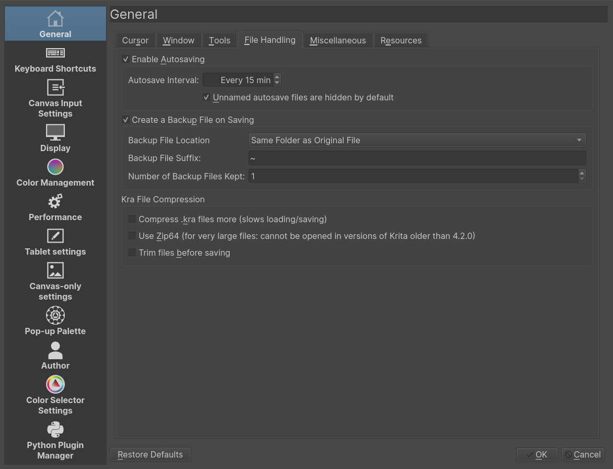
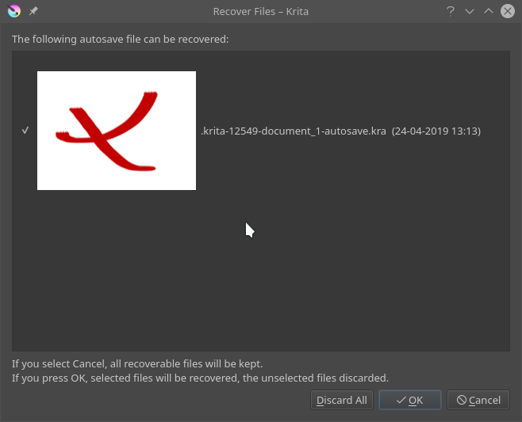
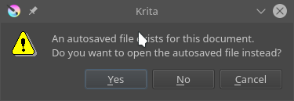
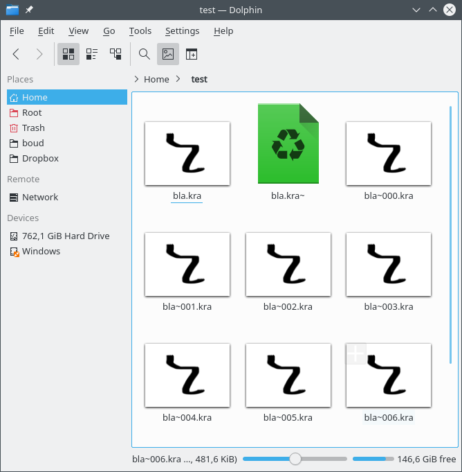
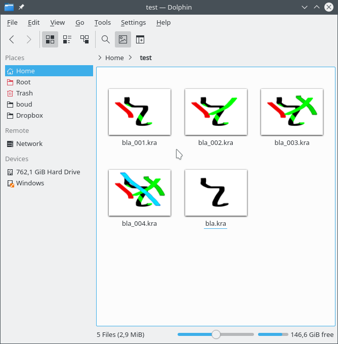

儲存、自動儲存及備份檔案¶
Krita does its best to keep your work safe. But if you want to make sure that you won't lose work, you will need to understand how Saving, AutoSave and Backup Files work in Krita.
儲存¶
Krita does not store your images somewhere without your intervention. You need to save your work, or it will be lost, irretrievably. Krita can save your images in many formats. You should always save your work in Krita's native format, .kra
because that supports all Krita's features.
Additionally, you can export your work to other formats, for compatibility with other applications or publication on the Web or on paper. Krita will warn which aspects of your work are going to be lost when you save to another format than .kra and offers to make a .kra file for you as well.
If you save your work, Krita will ask you where it should save on your computer. By default, this is the Pictures folder in your User folder: this is true for all operating systems.
If you use Save As... your image will be saved under a new name. The original file under its own name will not be deleted. From now on, your file will be saved under the new name.
If you use Export... using a new filename, a new file will be created with a new name. The file you have open will keep the old name, and the next time you save it, it will be saved under the old name.
You can Save, Save As... and Export... to any file format.
See also
自動儲存¶
AutoSave is what happens when you've worked for a bit and not saved your work yourself: Krita will save your work for you. Autosave files are by default hidden in your file manager. You can configure Krita 4.2 and up to create autosave files that are visible in your file manager. By default, Krita autosaves every fifteen minutes; you can configure that in the File tab of the General Settings page of the Configure Krita dialog, which is in the Settings menu (Linux, Windows) or in the Application menu (macOS).
If you close Krita without saving, your unsaved work is lost and cannot be retrieved. Closing Krita normally also means that autosave files are removed.
There are two possibilities:
You hadn't saved your work at all
You had saved your work already
未經儲存檔案的「自動儲存」¶
If you had not yet saved your work, Krita will create an unnamed AutoSave file.
When you're using Linux or macOS, the AutoSave file will be a hidden file in your home directory. If you're using Windows, the AutoSave file will be a file in your user's %TEMP% folder. In Krita 4.2 and up, you can configure Krita to make the AutoSave files visible by default.
A hidden autosave file will be named like .krita-12549-document_1-autosave.kra
If Krita crashes before you had saved your file, then the next time you start Krita, you will see the file in a dialog that shows up as soon as Krita starts. You can select to restore the files, or to delete them.
If Krita crashed, and you're on Windows and your %TEMP% folder gets cleared, you will have lost your work. Windows does not clear the %TEMP% folder by default, but you can enable this feature in Settings. Applications like Disk Cleanup or CCleaner will also clear the %TEMP% folder. Again, if Krita crashes, and you haven't saved your work, and you have something enabled that clear your %TEMP% folder, you will have lost your work.
If Krita doesn't crash, and you close Krita without saving your work, Krita will remove the AutoSave file: your work will be gone and cannot be retrieved.
If you save your work and continue, or close Krita and do save your work, the AutoSave file will be removed.
已儲存檔案的「自動儲存」¶
If you had already saved your work, Krita will create a named AutoSave file.
A hidden named autosave file will look like .myimage.kra-autosave.kra.
By default, named AutoSave files are hidden. Named AutoSave files are placed in the same folder as the file you were working on.
If you start Krita again after it crashed and try to open your original file, Krita will ask you whether to open the AutoSave file instead:
If you choose "no", the AutoSave file will be removed. The work that has been done since the last time you saved your file yourself will be lost and cannot be retrieved.
If you choose "yes", the AutoSave file will be opened, then removed. The file you have open will have the name of your original file. The file will be set to Modified, so the next time you try to close Krita, Krita will ask you whether you want to save the file. If you choose No, your work is irretrievably gone. It cannot be restored.
If you use Save As... your image will be saved under a new name. The original file under its own name and its AutoSave file are not deleted. From now on, your file will be saved under the new name; if you save again, an AutoSave file will be created using the new filename.
If you use Export... using a new filename, a new file will be created with a new name. The file you have open will keep the new name, and the next time you save it, the AutoSave file will be created from the last file saved with the current name, that is, not the name you choose for Export....
備份檔案¶
There are three kinds of Backup files
Ordinary Backup files that are created when you save a file that has been opened from disk
Incremental Backup files that are copies of the file as it is on disk to a numbered backup, and while your file is saved under the current name
Incremental Version files that are saves of the file you are working on with a new number, leaving alone the existing files on disk.
普通備份檔案¶
If you have opened a file, made changes, then save it, or save a new file after the first time you've saved it, Krita will save a backup of your file.
You can disable this mechanism in the File tab of the General Settings page of the Configure Krita dialog, which is in the Settings menu (Linux, Windows) or in the Application menu (macOS). By default, Backup files are enabled.
By default, a Backup file will be in the same folder as your original file. You can also choose to save Backup files in the User folder or the %TEMP% folder; this is not as safe because if you edit two files with the same name in two different folders, their backups will overwrite each other.
By default, a Backup file will have ~ as a suffix, to distinguish it from an ordinary file. If you are using Windows, you will have to enable "show file extensions" in Windows Explorer to see the extension.
If you want to open the Backup file, you will have to rename it in your file manager. Make sure the extension ends with .kra.
Every time you save your file, the last version without a ~ suffix will be copied to the version with the ~ suffix. The contents of the original file will be gone: it will not be possible to restore that version.
增量備份檔案¶
Incremental Backup files are similar to ordinary Backup files: the last saved state is copied to another file just before saving. However, instead of overwriting the Backup file, the Backup files are numbered:
Use this when you want to keep various known good states of your image throughout your painting process. This takes more disk space, of course.
Do not be confused: Krita does not save the current state of your work to the latest Incremental file, but copies the last saved file to the Backup file and then saves your image under the original filename.
增量版本檔案¶
Incremental Version works a bit like Incremental Backup, but it leaves the original files alone. Instead, it will save a new file with a file number:
